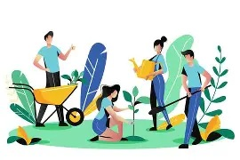
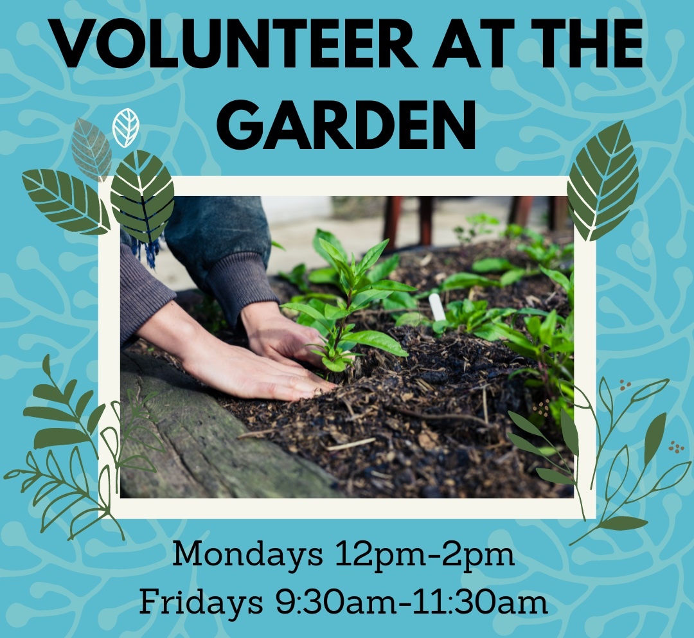

GreenRoots Community Garden
Cultivating healthy communities through gardening and sustainable living

Cultivating healthy communities through gardening and sustainable living
GreenRoots Community Garden is a non-profit organization founded in 2015 to promote urban agriculture and environmental awareness. We provide gardening plots for local residents and run educational workshops for schools and community groups.

Our mission is to cultivate healthy communities through gardening and sustainable living. Our vision is to be a model for community-driven environmental stewardship.


You can help GreenRoots by volunteering at events, maintaining the garden, or making a donation to support our work.
Email us at volunteer@greenroots.org to join.

Email: info@greenroots.org
Phone: +27 123 456 789
Address: 123 Green Street, Cape Town, South Africa